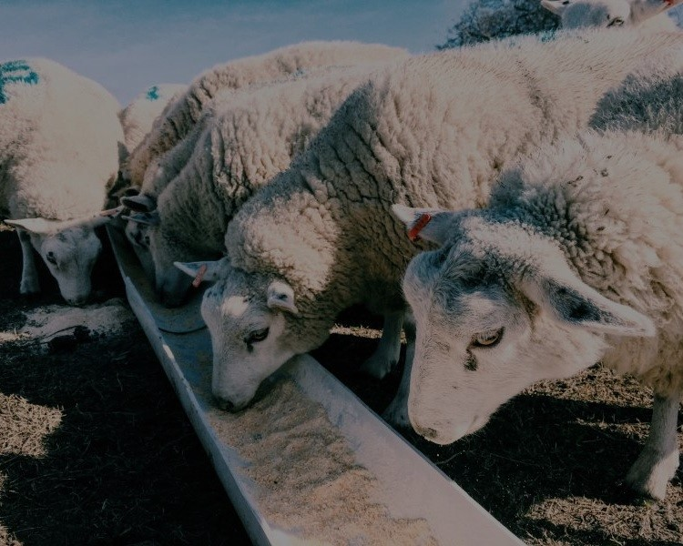
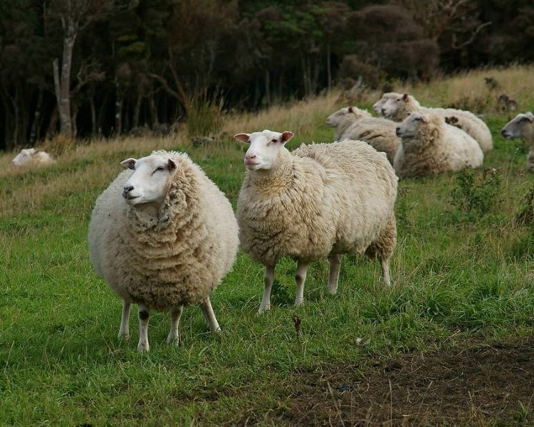

Merino
Charcterised by white wool and faces, and long spiral horns for the rams.

Merino
They have an almost 360° field of vision, and don't have to turn their heads to look behind them.

Merino
They are known for having the softest wool of any sheep.